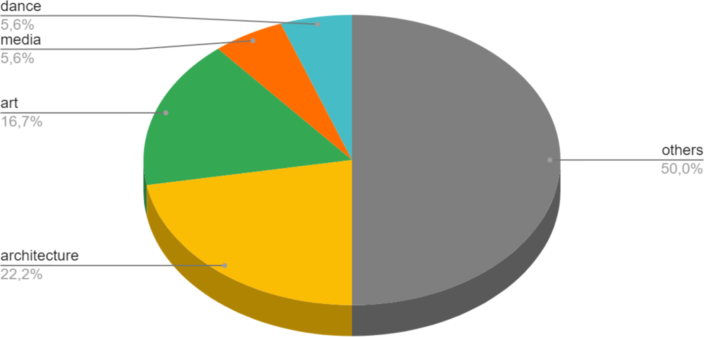
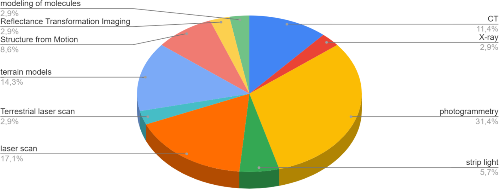
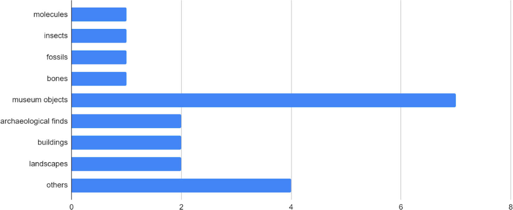
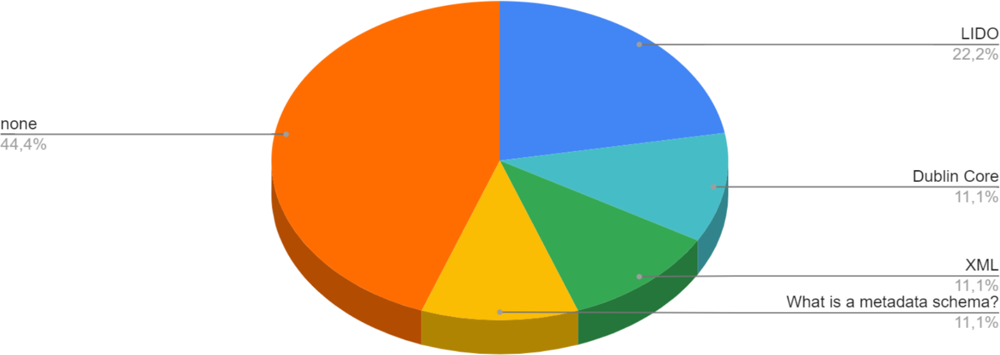
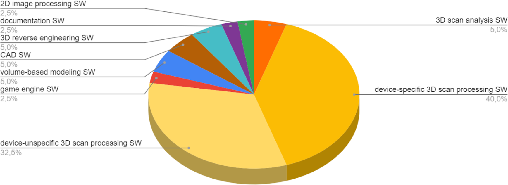
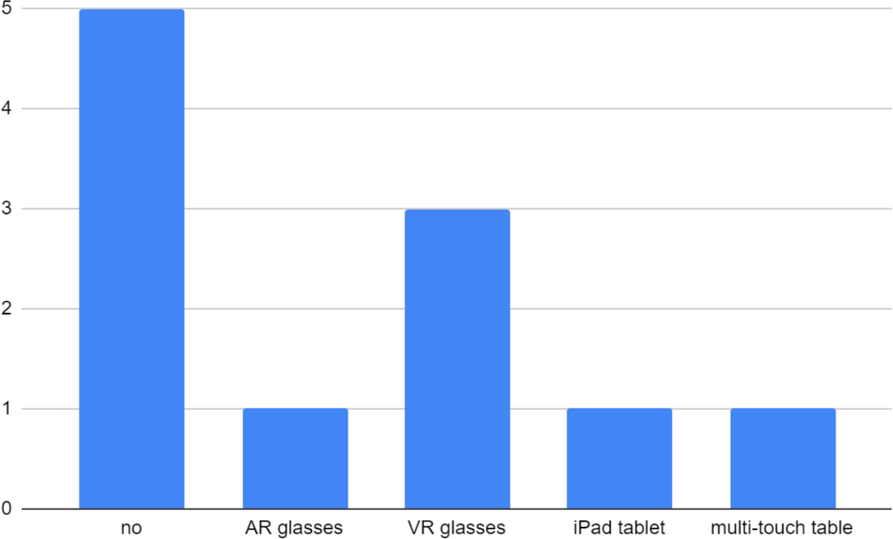
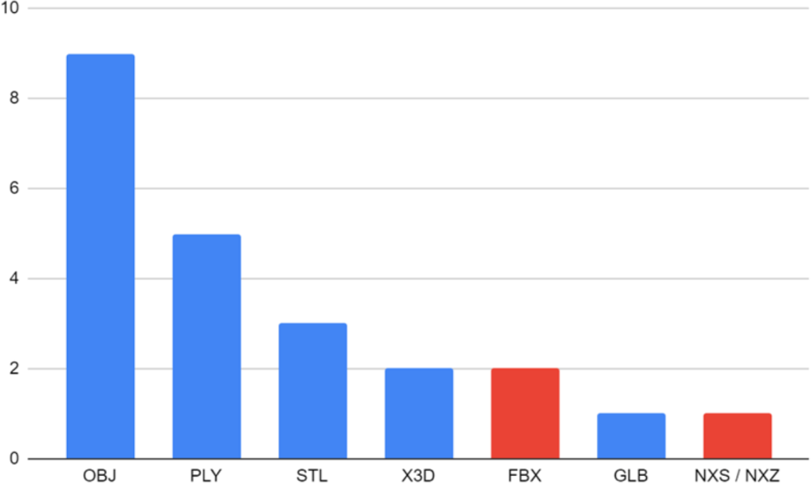

Creation, Use and Handling of 3D Models – Survey Results from the NFDI4Culture Community
by Jörg Heseler, Matthias Arnold, Alexandra Büttner, and Simon Worthington
v1.0
Published by: Digital Publications and Data Working Group (NFDI4Culture)
Last updated: 2023-10-05
Created: 2023-10-04
Language: English (United Kingdom)
Created by: Simon Worthington
Imprint
Published in Germany
Date: June 2023
NFDI4Culture – Consortium for Research Data on Material and Immaterial Cultural Heritage NFDI4Culture is a consortium within the German National Research Data Infrastructure (NFDI).
Published by the Digital Publications and Data Working Group (NFDI4Culture).
Inter. These fonts are licensed under the Open Font License. The Inter project is led by Rasmus Andersson, a Swedish maker–of–software living in San Francisco. https://github.com/rsms/inter/
Acknowledgements
The authors would also like to thank the following colleagues for their helpful comments (in alphabetical order): Eva Bodenschatz and Sabrina Herzog.
One of the project goals of NFDI4Culture, Task Area Data Publication and Availability (TA4), is the development of concepts for central long term preservation services to ensure a sustainable infrastructure. In particular, publications from cultural disciplines with 3D data are in the foreground. The requirements for developing a concept are the needs of producers, providers and administrators of research data. One measure of this needs assessment was the implementation of a survey on the creation, use and handling of 3D models, the results of which are discussed below.
Heseler, Jörg; Arnold, Matthias; Büttner, Alexandra; and Worthington, Simon. 2023. ‘Creation, Use and Handling of 3D Models – Survey Results from the NFDI4Culture Community’. Digital Publications and Data Working Group (NFDI4Culture). https://doi.org/10.5281/zenodo.8033413.
Results of the 3D Survey
This survey was sent out via email before and during the NFDI4Culture Forum "3D objects: digitisation, presentation and preservation" in May 2022. The primary aim of this survey was to identify file formats and metadata schemes used by our community in the field of 3D. In order to get a better understanding of the technical aspects of the digitisation process, we specifically asked about the use of software and hardware for capturing and digitising 3D objects. The tool used was a NextCloud form.

FigureWhich discipline would you classify yourself as?
Comparing approaches to 3D digitisation across different domains can help identify community-specific application scenarios, needs or bias within subject areas. Among the 20 survey participants, most associated themselves with disciplines outside the cultural heritage sector. In this regard, however, architecture and art were the largest subject groups, followed by dance and media studies.

FigureWhich methods do you use to digitise 3D objects?
When it comes to digitisation methods, photogrammetry, laser scanning, CT and X-ray were the most common responses. This question further revealed the diversity of methods currently in use, a total of 10 among 20 participants. Some of which we had not yet thought about before, such as structure-from-motion, strip-lighting and reflectance transformation imaging (RTI).

FigureWhat are you digitising?
Significant was also the broad variety of objects with regard to size, material and surface structure that had been digitised. The majority of participants mentioned museum objects, from pottery to sculptures made of different materials, not only ceramics but also metal. Responses further included very small objects such as insects, fossils, but also bones are also represented, for which mainly CT/X-ray processes were used. In addition, very large objects such as buildings and landscapes were represented, which were mostly captured with stand-up laser scanners or drones using photogrammetry procedures.

FigureWhich metadata schemes do you use?
The metadata schemas participants used to describe the physical and digital materials were LIDO, which is common for 3D data, but also simply XML with DublinCore or with its own vocabulary. Newer metadata schemas such as XMP or CARARE were not mentioned. One participant stated not to be familiar with the term metadata schema. The digitisation of cultural heritage materials always involves collaboration of several stakeholders and steps requiring different expertise and prior knowledge. Thus, providing meaningful explanations for technical terms is crucial in order to establish a common ground for discussion and knowledge sharing among the diverse cultural heritage community. Notably, more than half of the respondents stated to not use metadata schemas at all. Here we still have to clarify to what extent common schemes for 3D data were or are insufficient or unsuitable.

FigureWhat software do you use to digitise 3D objects?
Concerning 3D digitisation software (SW), a clear majority mentioned 3D scan processing SW for point clouds or photos as depicted in yellow in the figure above. However, half of these applications were device and manufacturer-specific. In contrast, software for 3D scan analysis, 3D modelling or project documentation was mentioned less frequently.
FigureWhat hardware do you use to capture 3D objects?
As far as hardware for digitising 3D objects is concerned, participants mentioned the use of hand-held scanners that work with stripe light or laser scanning methods, among others, predominantly for capturing small to medium-sized objects. Stand scanners were used that work with laser light, predominantly for medium-sized to large objects. Single-lens reflex (SLR) and mirrorless cameras were also used to capture small to medium sized objects, either to calculate 3D models using photogrammetry techniques or to produce simple 2D images from different perspectives. Drones were also used for buildings and landscapes. In addition, one respondent mentioned an RTI (Reflectance Transformation Imaging) dome scanner.

FigureDo you use special hardware to display your 3D data?
While the majority of survey participants does not seem to use specific devices for displaying 3D data, VR (Virtual Reality) glasses were the most frequent responses, including the Oculus Rift and HTC Vive glasses but also the Hololens AR (Augmented Reality) glasses. An iPad tablet and a MultiTouch table were also mentioned once.

FigureWhich 3D formats do you work with for digitisation, presentation or digital preservation?
The most important question in the survey for digital preservation was which 3D formats are used by our community for different application scenarios, such as digitisation, presentation and preservation. Wavefront OBJ was the one most frequently mentioned, followed by Stanford Polygon (PLY) and Stereolithography (STL). The STL format is not able to store colour information and is more commonly used in the context of 3D printing. We have not yet dealt with stereolithography in this survey. Only the two formats shown in red in the figure above, Filmbox (FBX) and Nexus (NXS or NXZ), are not suitable for digital preservation. Filmbox (FBX) is a proprietary, non-open format, which means that there is no openly accessible format specification that describes the exact structure of an FBX file. If this format is no longer widespread in the future, the long-term archive may not be able to develop its own tools to render or convert FBX files. In the case of Nexus, the distribution is still too low to ensure that 20 years later there will still be tools that can display this format.
FigureDo you use special software to display your 3D data?
Finally, the survey asked about the software used to display 3D data. Here, Meshlab was named most frequently. Responses further included browser-based tools such as the 3DHOP viewer, which is based on the Nexus adaptive 3D viewer, and the kompakkt viewer, which in turn is based on the Babylon viewer or Babylon.js framework. All viewers shown in the figure above are open source, only the GOM Inspect, depicted in red, is proprietary, i.e. non-open.
Conclusion and Outlook
This survey gave us insight into the formats, devices, and software used by our community. A follow-up survey will incorporate the results of this survey and identify long-term archival purposes and 3D-related use cases for our community. For this purpose, more than 20 participants as in this survey should be reached in order to be able to draw general conclusions. Based on this and the following survey results, a guide to the preservation of 3D cultural heritage objects will then be produced.
Appendix
Survey Data
Survey source data (anonymised) as an XLSX or CSV spreadsheet stored on GitHub.